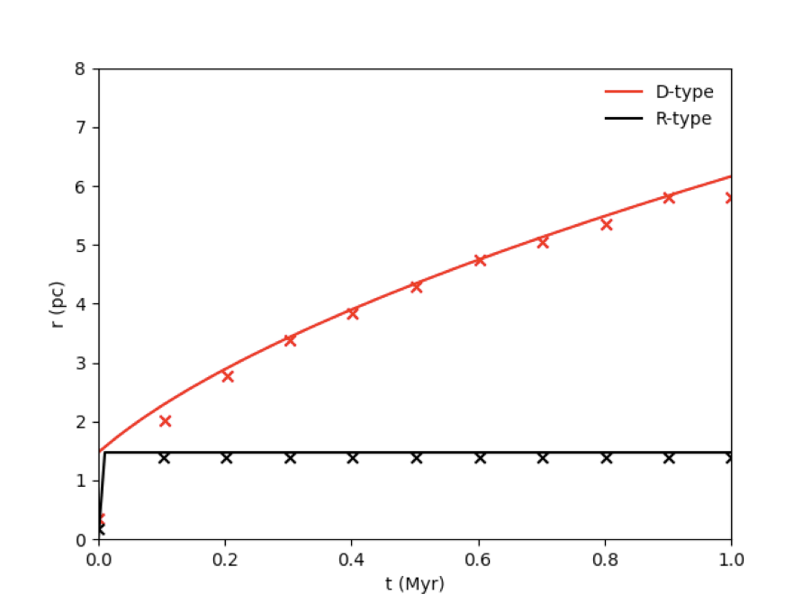

Physics Module Tests
Stellar Feedback
Strömgren Sphere (tests/stromgren/)
The Strömgren radius is the point at which the rate of ionizations and recombinations are equal, and is given by
\(r_s=\bigg(\frac{3Q}{4\pi \alpha_B n^2}\bigg)^{1/3}\),
where \(Q\) is the ionizing photon rate, \(\alpha_B=2.54\times 10^{-13} \rm~cm^3~s^{-1}\) is the case B recombination rate, and \(n\) is the number density of atomic Hydrogen.
The R-type test checks whether the ionization equilibrium radius matches the expected value. Heating and cooling is turned off for this test. The time evolution of the R-type ionization front is given by
\(R_r(t)=r_s\bigg( 1- e^{-t/t_{rec}} \bigg)^{1/3}\),
where \(t_{rec}=(n\alpha_B)^{-1}\) is the recombination rate. The important result of this test is whether the radius is stable over time.
The D-type expansion describes the expanding shockwave formed by the hot ionization front compressing the ambient cold interstellar medium. The time evolution of the D-type ionization front is given by
\(R_d=r_s\bigg( 1+\frac{7\sqrt{4/3}c_st}{4r_s} \bigg)^{4/7}\)
where \(c_s=\sqrt{k_BT/\mu m_{\rm H}}\) is the ambient sound speed and the molecular mass is \(\mu=1.3\).
The R-type and D-type tests can be run with tests/stromgren/run.sh. The ionization rate is set to \(Q=10^{48}\rm~s^{-1}\) with an ambient number density of \(n=100\rm~cm^{-3}\). The R-type test is isothermal with an initial ambient temperature of \(10^4\rm~K\), while the D-type test allows for heating and cooling with an initial ambient temperature of \(100\rm~K\). Gravity is off for these tests.
The test should output a plot called stromgren_test.png, and it should look like this:
